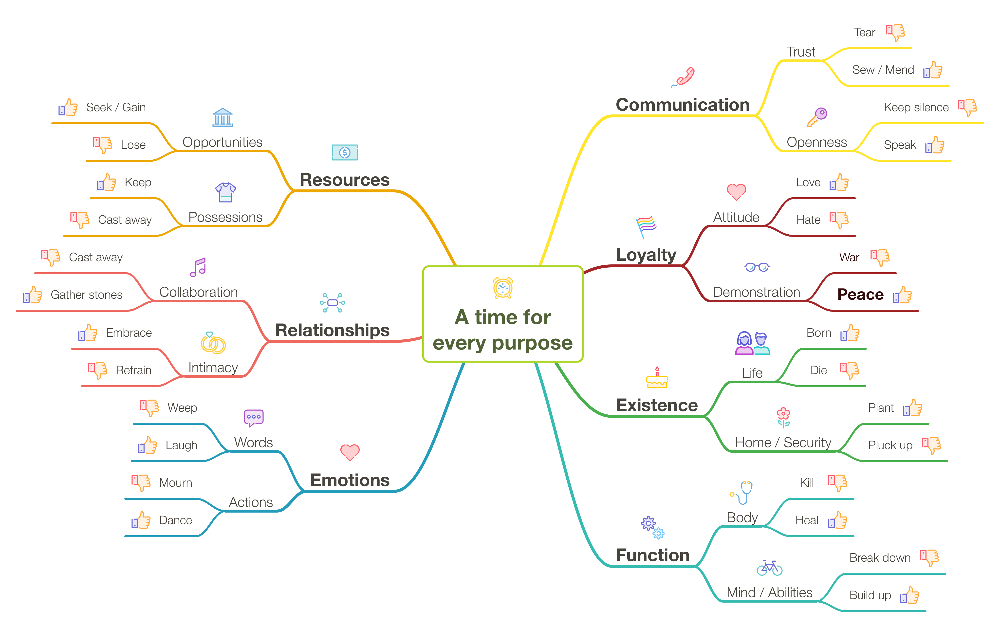

The Growth Pattern of Solomon
The scent of destiny wafts from Solomon's poetic phrasing. Cycle after cycle, fortune's reversals beat like a drum, lingering over hatred and war before ushering in the hoped for age of peace. In 1959, Pete Seeger wrote the pop song "Turn, Turn, Turn", adorning and slightly reordering the words from Ecclesiastes 3:1-8. The song was first released on vinyl in 1962 by the Limeliters, to be followed months later by Pete Seeger himself. However, the best known version that climbed the charts was performed by the Byrds in 1965.
Why dredge up a lesson in pop history? First, I was born in 1962, the year the song was first recorded. Second, the ability to decode the meaning of this passage and discover its echoes elsewhere in the Bible is the greatest gift that God has ever given me. It forms a large part of the answer to the burning question I asked over thirty years ago. Christianity has so many ideas, doctrines, and rules that I could not wrap my head around it all. I wanted a simpler way. I wanted to know the most important truths of the faith and how they fit together so that I could use that as a framework for adding in all the rest. I needed a way to manage the complexity. With the Harvest and Growth Patterns and the larger structure of Lady Wisdom's House, I found that, but the Growth Pattern is the crucial one.
I discovered and documented the Growth Pattern while writing Peace, like Solomon Never Knew and made some elaborations to it in Plague, Precept, Prophet, Peace. The better part of this article is adapted from the chapter "There is a Season" in the former book. My original name for the pattern was "The Seven Pieces of Peace", which I changed once I had a better handle on it. Likewise, the names I used to describe the seven phases of the pattern changed. Here is a concordance to help. The Synonym is the name used in the original illustration.
| Phase | Synonym | Year Range | Solomon's Times & Human Needs |
|---|---|---|---|
| Security | Existence | Birth to Age 7 | be born, die, plant, pluck up (uproot) |
| Infants need food, shelter & parental love. | |||
| Ability | Function | Ages 7 to 14 | kill, heal, tear down, build up |
| Children must be taught to develop the use of | |||
| their minds and hands. | |||
| Stability | Emotions | Ages 14 to 21 | weep, laugh, mourn, dance |
| Teens must learn verbal & physical self-control. | |||
| Amity | Relationships | Ages 21 to 28 | scatter stones, gather, embrace, refrain |
| Cooperation in work & physical intimacy. | |||
| Opportunity | Resources | Ages 28 to 35 | seek, give up, keep, throw away |
| Choosing a career (immaterial opportunities) | |||
| and managing your wealth (material resources). | |||
| Community | Communication | Ages 35 to 42 | tear, mend, be silent, speak |
| Handle conflict, dissolve partnerships or | |||
| forgive, maintain open lines of communication. | |||
| Loyalty | Loyalty | Ages 42 to 49 | love, hate, war, peace |
| Love & hate are about defining your loyalties | |||
| and forming loyal attitudes: who is on | |||
| your side and who is on the other side. | |||
| War & peace are about expressing those | |||
| loyalties by your actions. |

In progress...